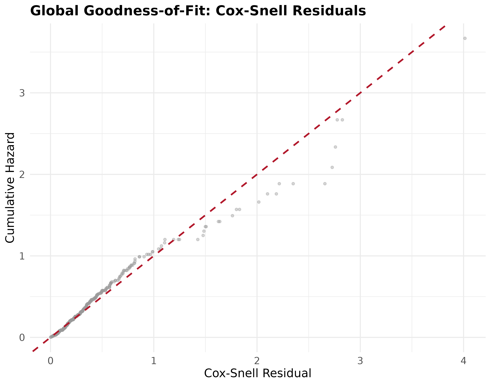
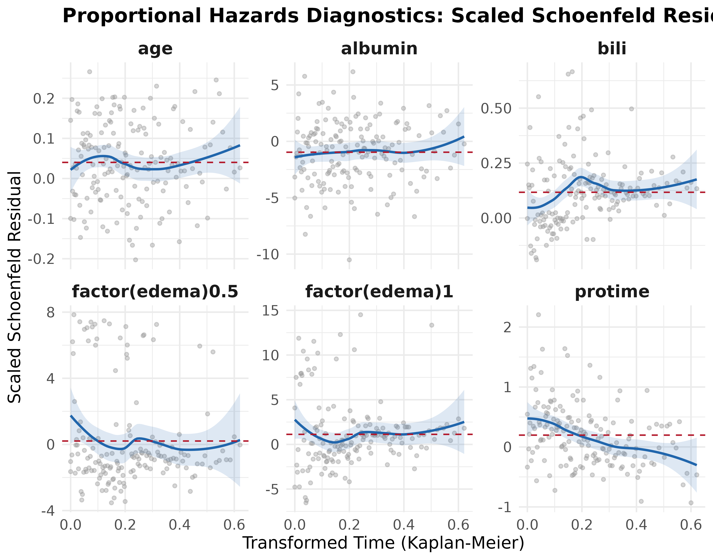
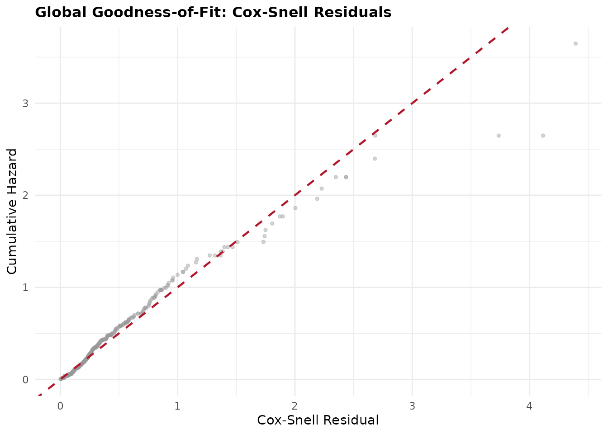
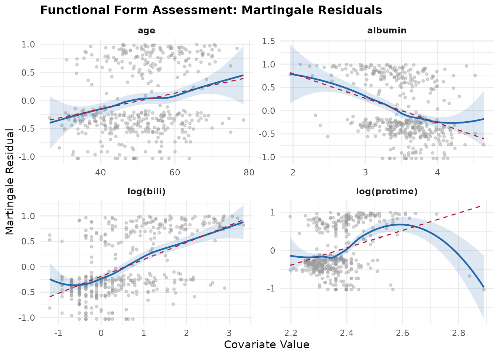
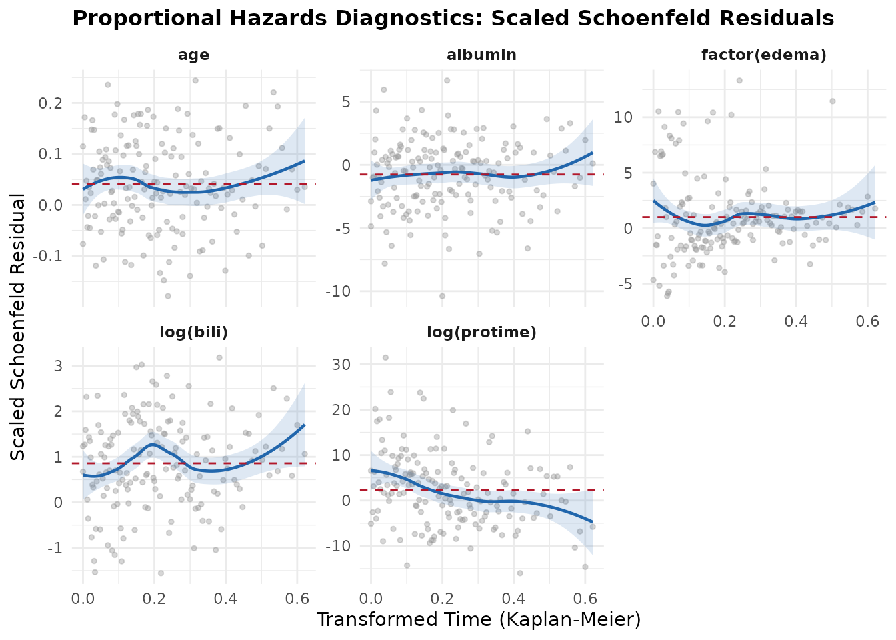
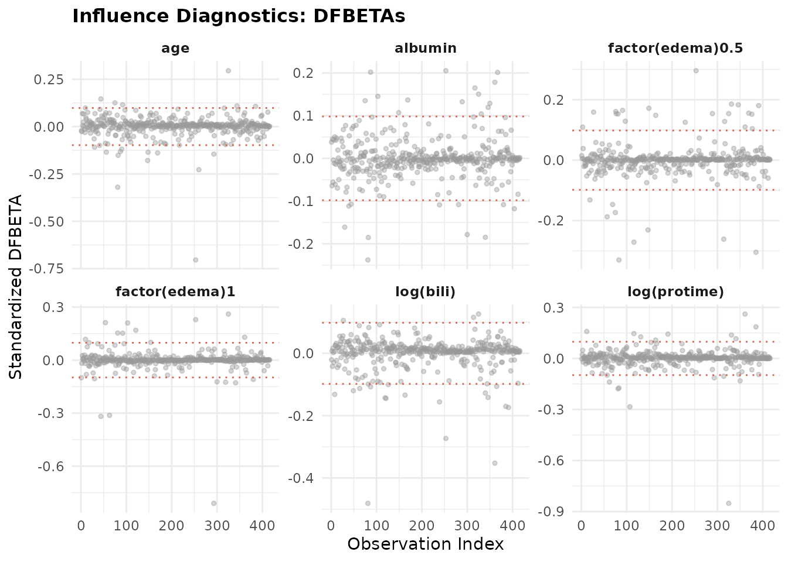
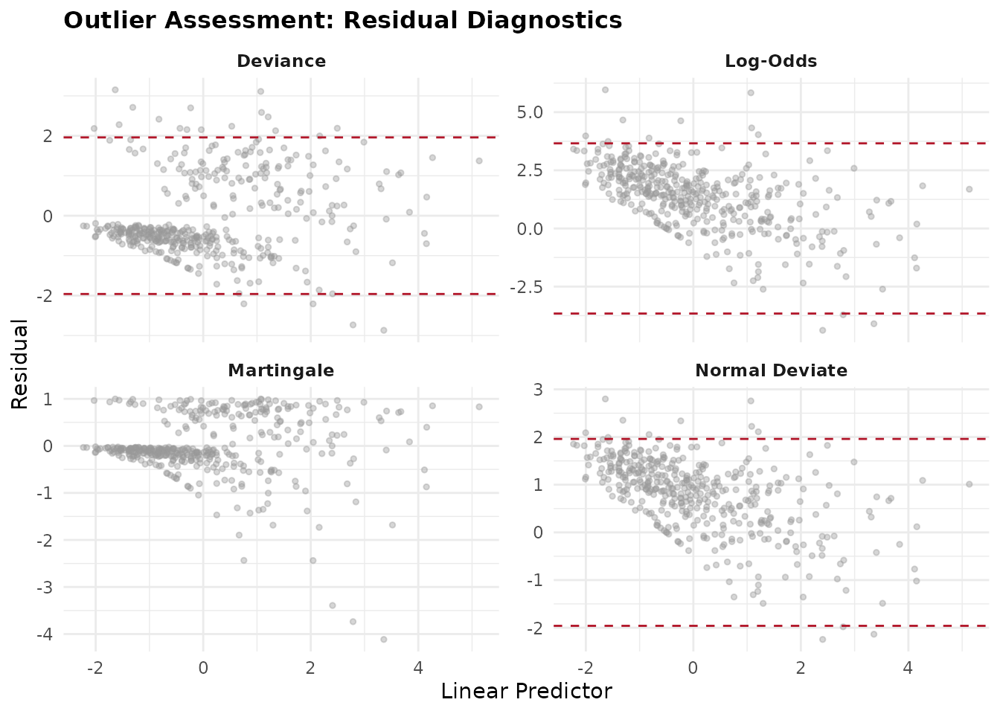

Introduction to survAudit: Auditing Cox Proportional Hazards Models
survAudit-introduction.RmdSurvival Analysis and the Cox Model
When conducting research where the outcome of interest is the time until an event occurs, the most widely used method is the Cox Proportional Hazards (PH) model. For a Cox model’s estimates to be valid, the model must satisfy several structural and mathematical assumptions.
Checking these assumptions usually requires running fragmented tests
from multiple packages. survAudit solves this by
providing:
- A Unified Assumption Classification: Organizing assumptions into Non-Identifiable (purely qualitative), Partially Assessable (combining data and judgment), and Statistically Assessable (testable from data).
- Comprehensive Diagnostics: It aggregates proportional hazards, functional form, influence, outliers, and generalized collinearity (GVIF) into one run.
- Auditable S3 Objects: It returns an object containing all raw diagnostic metrics and lets analysts append qualitative justifications directly to the object before saving it.
Case Study Workflow
In this vignette, we demonstrate how survAudit changes
the analytical workflow of a typical survival analysis by revealing
model limitations that are not apparent from standard Cox regression
output. We use the classic pbc dataset from the
survival package, which records survival data for patients
with primary biliary cholangitis. Our goal is to highlight how standard
Cox modeling practices can easily overlook critical assumption
violations, and how the structured survAudit framework
detects them and explicitly separates data-driven findings from those
requiring scientific justification.
Importantly, survAudit does not just produce visual
plots; it returns a rich S3 object. Analysts can directly extract the
underlying data (e.g., audit$outliers$martingale,
audit$ph$zph) for custom downstream analyses and to
preserve a transparent diagnostic record.
1. Fit the Initial Model
A standard approach might begin by fitting a multivariate Cox model
using a mix of continuous covariates (age,
bili, albumin, protime) and a
categorical factor (edema):
library(survival)
library(survAudit)
# Load data and convert endpoint
data(pbc, package = "survival")
pbc$status <- ifelse(pbc$status == 2, 1, 0)
# Fit a standard Cox PH model
fit <- coxph(
Surv(time, status) ~ age + bili + albumin + protime + factor(edema),
data = pbc
)
summary(fit)
#> Call:
#> coxph(formula = Surv(time, status) ~ age + bili + albumin + protime +
#> factor(edema), data = pbc)
#>
#> n= 416, number of events= 160
#> (2 observations deleted due to missingness)
#>
#> coef exp(coef) se(coef) z Pr(>|z|)
#> age 0.040138 1.040954 0.008152 4.924 8.49e-07 ***
#> bili 0.117018 1.124140 0.013235 8.841 < 2e-16 ***
#> albumin -0.964037 0.381350 0.205262 -4.697 2.65e-06 ***
#> protime 0.197402 1.218234 0.056958 3.466 0.000529 ***
#> factor(edema)0.5 0.206240 1.229049 0.229181 0.900 0.368172
#> factor(edema)1 1.124857 3.079777 0.295062 3.812 0.000138 ***
#> ---
#> Signif. codes: 0 '***' 0.001 '**' 0.01 '*' 0.05 '.' 0.1 ' ' 1
#>
#> exp(coef) exp(-coef) lower .95 upper .95
#> age 1.0410 0.9607 1.0245 1.0577
#> bili 1.1241 0.8896 1.0954 1.1537
#> albumin 0.3814 2.6223 0.2550 0.5702
#> protime 1.2182 0.8209 1.0896 1.3621
#> factor(edema)0.5 1.2290 0.8136 0.7843 1.9260
#> factor(edema)1 3.0798 0.3247 1.7273 5.4913
#>
#> Concordance= 0.813 (se = 0.018 )
#> Likelihood ratio test= 184.9 on 6 df, p=<2e-16
#> Wald test = 219.1 on 6 df, p=<2e-16
#> Score (logrank) test = 330.2 on 6 df, p=<2e-16In many applied analyses, reporting may proceed at this stage. The standard summary output clearly indicates that age, bilirubin, albumin, and prothrombin time are all highly significant predictors of mortality (p < 0.001), along with severe edema. With interpretation focused primarily on coefficient estimates and significance tests, this model would likely be published as-is.
2. The survAudit Intervention
Running survAudit() immediately uncovers multiple
violated assumptions that challenge the standard model’s validity. The
function aggregates goodness-of-fit, collinearity, proportional hazards,
functional form, influence, and outliers into a single object.
audit1 <- survAudit(fit, data = pbc)
summary(audit1)
#> =================================================================
#> survAudit: Detailed Diagnostic Report
#> =================================================================
#>
#> ── Data Context & Model Info ────────────────────────────────────
#>
#> Formula: Surv(time, status) ~ age + bili + albumin + protime + factor(edema)
#> Sample size: 416 | Events: 160 | Censored: 256 (61.5%)
#> Missing data: protime: 2 missing (0.5%) | Tied events: 10 (6.2%)
#>
#> ── 1. Non-Identifiable Assumptions ──────────────────────────────
#>
#> These cannot be tested statistically and require domain knowledge:
#> - Independent censoring
#> - Absence of unmeasured confounding
#>
#> ── 2. Partially Assessable Assumptions ──────────────────────────
#>
#> [ Global Goodness-of-Fit ]
#> Cox-Snell residuals computed.
#> (Use plot(audit, which = "gof") to visually assess macro-calibration.)
#>
#> [ Functional Form Assessment ]
#> Continuous variables assessed: age, bili, albumin, protime
#> (Use plot(audit, which = "functional") to visually inspect non-linearity.)
#>
#> [ Influence Diagnostics ]
#> Threshold (2/sqrt(n)): 0.0981
#> Flagged observations (|dfbetas| > threshold): 69
#>
#> Top 5 most influential observations (by max |dfbetas|):
#> Obs Max |dfbetas|
#> ────────────────────────
#> 325 0.9582
#> 293 0.5832
#> 107 0.5716
#> 63 0.5118
#> 253 0.4390
#>
#> (Use plot(audit, which = "influence") to visually inspect highly influential cases.)
#>
#> [ Outlier Assessment ]
#> Flagged deviance residuals (|resid| > 1.96): 19
#> Flagged log-odds residuals (|resid| > 3.66): 9
#>
#> Top 5 largest deviance residuals:
#> Obs Deviance Resid
#> ────────────────────────
#> 319 3.2353
#> 87 3.0989
#> 331 2.7288
#> 103 2.5281
#> 350 2.4782
#>
#> (Use plot(audit, which = "outliers") to visually inspect distributions.)
#>
#> ── 3. Statistically Assessable Assumptions ──────────────────────
#>
#> [ Proportional Hazards ]
#> Variable chisq df p
#> ────────────────────────────────────────────────────
#> protime 9.030 1 0.003
#> bili 7.835 1 0.005
#> albumin 1.667 1 0.197
#> factor(edema) 3.121 2 0.210
#> age 0.067 1 0.796
#> GLOBAL 22.248 6 0.001
#>
#> Global test: significant (p = 0.001)
#> Flagged covariates (p < 0.05): protime, bili
#> (Use plot(audit, which = "ph") to visually assess time-varying effects.)
#>
#> [ Event Sufficiency (EPV) ]
#> Events Per Variable (EPV): 26.7
#> Assessment: adequate (target: >= 20)
#>
#> [ Collinearity Diagnostics (VIF) ]
#> Threshold: VIF > 5 (or scaled GVIF^(1/(2*Df)) > 2.236 for multi-Df terms)
#>
#> Term GVIF Df GVIF^(1/(2*Df))
#> ────────────────────────────────────────────────────────────
#> age 1.059 1 1.029
#> bili 1.129 1 1.063
#> albumin 1.146 1 1.070
#> protime 1.045 1 1.022
#> factor(edema) 1.273 2 1.062
#>
#> No collinearity issues detected.Visual Diagnostics
Statistical tests can be overly sensitive to sample size, insensitive
to localized lack of fit, or entirely absent for certain structural
assumptions (such as functional form). Because of this,
survAudit’s summary explicitly prompts the analyst to
generate targeted visual diagnostics for both flagged violations and
inherently visual checks.
Overall Calibration First, we check the overall Goodness-of-Fit using the Cox-Snell residuals.
plot(audit1, which = "gof")
The cumulative hazard of the Cox-Snell residuals generally follows the 45-degree reference line, suggesting the overall macro-level calibration of the model is acceptable, even if specific covariate assumptions are violated.
Functional Form (Linearity) The summary explicitly reminds us that functional form assessment is inherently visual. If we plot the functional form using martingale residuals:
plot(audit1, which = "functional")
For bili, the plot clearly shows a logarithmic curve.
For protime, the risk appears constant initially before
sharply increasing. The apparent decrease at extreme values is likely an
artifact of data sparsity in the right tail, highlighting why visual
inspection by a domain expert is necessary.
Proportional Hazards
plot(audit1, which = "ph")
The Schoenfeld residual plots for both protime and
bili show strong deviations from a horizontal line. This
visually confirms the statistical violations flagged in the summary.
Summary of Initial Audit Without having seen all the
plots already, the initial survAudit explicitly revealed
that the standard Cox model suffers from multiple structural issues:
- Non-linearity for both
biliandprotime. - Proportional hazards violations for
biliandprotime. - The presence of several highly influential observations and outliers across the dataset.
Rather than proceeding with the initial model, the analyst is now
equipped with the exact information needed to iteratively correct the
model. As a first step, we will apply log-transformations to
bili and protime to address the functional
form violations, before we re-audit the model.
3. Iterative Model Correction
Guided by the audit, we fit a corrected model using the log-transformed variables:
# Fit an updated model with log transformations
fit2 <- coxph(
Surv(time, status) ~ age + log(bili) + albumin + log(protime) + factor(edema),
data = pbc
)
# Re-audit the updated model
audit2 <- survAudit(fit2, data = pbc)
summary(audit2)
#> =================================================================
#> survAudit: Detailed Diagnostic Report
#> =================================================================
#>
#> ── Data Context & Model Info ────────────────────────────────────
#>
#> Formula: Surv(time, status) ~ age + log(bili) + albumin + log(protime) + factor(edema)
#> Sample size: 416 | Events: 160 | Censored: 256 (61.5%)
#> Missing data: protime: 2 missing (0.5%) | Tied events: 10 (6.2%)
#>
#> ── 1. Non-Identifiable Assumptions ──────────────────────────────
#>
#> These cannot be tested statistically and require domain knowledge:
#> - Independent censoring
#> - Absence of unmeasured confounding
#>
#> ── 2. Partially Assessable Assumptions ──────────────────────────
#>
#> [ Global Goodness-of-Fit ]
#> Cox-Snell residuals computed.
#> (Use plot(audit, which = "gof") to visually assess macro-calibration.)
#>
#> [ Functional Form Assessment ]
#> Continuous variables assessed: age, log(bili), albumin, log(protime)
#> (Use plot(audit, which = "functional") to visually inspect non-linearity.)
#>
#> [ Influence Diagnostics ]
#> Threshold (2/sqrt(n)): 0.0981
#> Flagged observations (|dfbetas| > threshold): 74
#>
#> Top 5 most influential observations (by max |dfbetas|):
#> Obs Max |dfbetas|
#> ────────────────────────
#> 325 0.8515
#> 293 0.8103
#> 253 0.7041
#> 81 0.4813
#> 361 0.3525
#>
#> (Use plot(audit, which = "influence") to visually inspect highly influential cases.)
#>
#> [ Outlier Assessment ]
#> Flagged deviance residuals (|resid| > 1.96): 20
#> Flagged log-odds residuals (|resid| > 3.66): 12
#>
#> Top 5 largest deviance residuals:
#> Obs Deviance Resid
#> ────────────────────────
#> 87 3.1512
#> 319 3.1109
#> 293 -2.8688
#> 253 -2.7338
#> 119 2.7121
#>
#> (Use plot(audit, which = "outliers") to visually inspect distributions.)
#>
#> ── 3. Statistically Assessable Assumptions ──────────────────────
#>
#> [ Proportional Hazards ]
#> Variable chisq df p
#> ────────────────────────────────────────────────────
#> log(protime) 8.743 1 0.003
#> factor(edema) 4.084 2 0.130
#> albumin 1.295 1 0.255
#> log(bili) 1.050 1 0.306
#> age 0.001 1 0.974
#> GLOBAL 14.199 6 0.027
#>
#> Global test: significant (p = 0.027)
#> Flagged covariates (p < 0.05): log(protime)
#> (Use plot(audit, which = "ph") to visually assess time-varying effects.)
#>
#> [ Event Sufficiency (EPV) ]
#> Events Per Variable (EPV): 26.7
#> Assessment: adequate (target: >= 20)
#>
#> [ Collinearity Diagnostics (VIF) ]
#> Threshold: VIF > 5 (or scaled GVIF^(1/(2*Df)) > 2.236 for multi-Df terms)
#>
#> Term GVIF Df GVIF^(1/(2*Df))
#> ────────────────────────────────────────────────────────────
#> age 1.037 1 1.018
#> log(bili) 1.096 1 1.047
#> albumin 1.151 1 1.073
#> log(protime) 1.084 1 1.041
#> factor(edema) 1.228 2 1.053
#>
#> No collinearity issues detected.The initial audit suggested a log-linear relationship for bilirubin, but we must re-check all diagnostic plots to confirm the transformation’s effect across all assumptions.
Overall Calibration Re-Assessment
plot(audit2, which = "gof")
The overall goodness-of-fit using Cox-Snell residuals continues to follow the 45-degree reference line except for very few outliers, confirming that the macro-level calibration of the model remains acceptable after the variable transformations.Functional Form Re-Assessment
plot(audit2, which = "functional")
The functional form plots for the updated model show that the log-transformations were not a complete fix. While the curve forlog(bili) shows some improvement, the functional form for
log(protime) remains problematic. (Note: Ensure you cycle
through or extract all generated plot panels to view every continuous
covariate).
Proportional Hazards Re-Assessment
plot(audit2, which = "ph")
Re-assessing proportional hazards reveals further complications. The proportional hazards assumption is still not satisfied forlog(bili). Interestingly, the Schoenfeld residual slope for
log(protime) looks a tiny bit better, but the assumption is
still violated.
Influence Re-Assessment
plot(audit2, which = "influence")
When evaluating influence, analysts should visually inspect the DFBETAs plots for points that stray far from the main cluster and cross the dotted threshold lines. The audit explicitly reports that multiple observations still exceed the conservative DFBETAs threshold.Outliers Re-Assessment
plot(audit2, which = "outliers")
For outliers, the audit generates a four-panel plot displaying Deviance, Log-Odds, Martingale, and Normal Deviate residuals against the linear predictor. Analysts should check these residual plots for points that systematically exceed their respective threshold bands (e.g., for deviance and normal deviate, or for log-odds). Several observations continue to exhibit extreme deviance residuals.These findings emphasize that influence and outliers are global properties of the data. It is highly recommended that these extreme outliers and influential points are checked manually by the analyst to ensure they are not the result of data entry errors, and to evaluate their impact on the final estimates for example by using sensitivity analyses.
Ongoing Model Refinement The initial analysis masked
severe misspecifications, but survAudit surfaced critical
violations. Our re-audit demonstrated that survival modeling is highly
iterative—simple log-transformations are rarely a silver bullet. While
some assumptions improved, proportional hazards violations and
influential outliers persisted.
By formalizing these checks, survAudit prevents the
premature publication of mis-specified models and guarantees
transparency. We are not finished here: the logical next steps involve
manually investigating the highly influential observations and exploring
alternative strategies for both the bili and
protime variables (e.g., stratification or time-dependent
effects) to achieve a robust final model.
4. The Auditable S3 Object
Importantly, survAudit does not just produce plots or
terminal output; it returns a rich S3 object. This allows users to
inspect individual diagnostic components, reuse computed quantities, and
integrate audit results into custom reporting workflows.
For example, you can extract the underlying Proportional Hazards test table:
print(audit2$ph$table)
#> chisq df p
#> age 0.001048017 1 0.974174526
#> log(bili) 1.049717332 1 0.305572197
#> albumin 1.295369296 1 0.255060811
#> log(protime) 8.742980634 1 0.003107961
#> factor(edema) 4.083722890 2 0.129786895
#> GLOBAL 14.199356231 6 0.027486814Some assumptions (like Independent Censoring) cannot be tested
statistically. survAudit requires you to document your
qualitative justification. You can append these directly to the
object:
audit2$assumptions$non_identifiable$independent_censoring$justification <-
"Censoring was purely administrative (end of study), satisfying independent censoring."If we print the audit again, this justification is now permanently attached to the object, ensuring complete transparency of both the statistics and your clinical reasoning.
By formalizing this iterative diagnostic process,
survAudit reduces the likelihood that important model
inadequacies remain undetected during routine analysis.